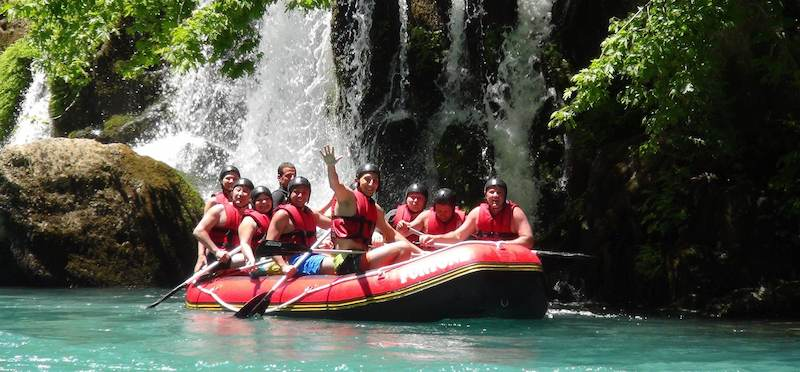
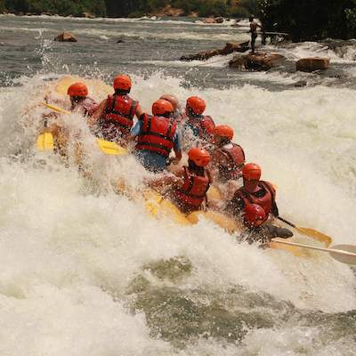
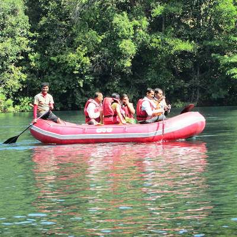
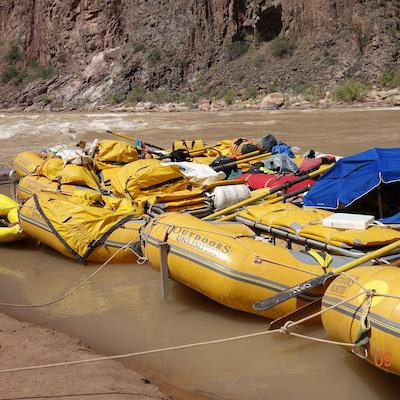

Trips
At Dry Ore Rafting our greatest concern is your saftey. We strive to give all of our customers the greatest rafting expereince possible.
Los Dientes del Diablo
Los Dientes del Diablo is our yealy special rafting location. It is a fun, high energy adventure only for the most comitted rafters. This two week trip will take you through tone of the highest intensity rafting experince that we have to offer. We provide cabins, rental tents, and of course a full rafting experience. Our rafting professionals would rank this experience as the highst difficulty insensity. This trip while fun will require training and a large amount of stamina. We have prepare our resort in Lod Dientes to be a safe, and affordable location.

Big Mallard
Big Mallard, is a great option for those who prefer a dense jungle rafting adventure. The trip is a specially designed six day trip. During this trip you will get to explore the dense expanse of the amazon rainforest. This trip is for those who enjoy an adventure and love nature. Prepare for both a rafting trip and tour of some of the jungle's most fasanating creatures. Our professionals are trained to know how to avoid all dangerous wildlife while on the river. This journey will gauerentee the best jungle rafting expereince there is!

Full Day Adventure
Our full day adventure is perfect for a adventerous weekend getaway. We provide a campsite with cabins in order for your day to be wonderful. You can customize your Full Day Adventure experince for one to three days. At Dry Ore Rafting, your needs are our greatest concern. We have dozens of Full Day Adventure packages, each for a different type of vacationer. From rock climbing to hiking, and to splunking, our Full Day Adventure can accomidate you. Our well maintained locaion is located in Shelbyville Arkansas. We provide shuttles to and from the campsite for all who are traveling form out of town. To find out more about the vacation you want, call (111) 222 - 3333.

Trip Infromation
| Trip Name | Location | Duration | Phone Number |
|---|---|---|---|
| Los Dientes del Diablo | 9486 Diablo Dr, Los Dientes, Mexico | 10 Days | (123) 456 - 7890 |
| Big Mallard | 1245 Maria Dr, Guapo, Brazil | 6 Days | (098) 765 - 4321 |
| Half Day Adventure | 888 Madison Dr, Shelbybille, Arkansas | 4 Hours | (111) 222 - 3333 |
| Full Day Adventure | 888 Madison Dr, Shelbybille, Arkansas | 1-3 Days | (111) 222 - 3333 |
| Week Long Adventure | 888 Madison Dr, Shelbybille, Arkansas | 7 Days | (111) 222 - 3333 |
| 10 Days | |||
| 14 Days | |||
| Contact cooperate for more information about location specific trips. Click here! | |||